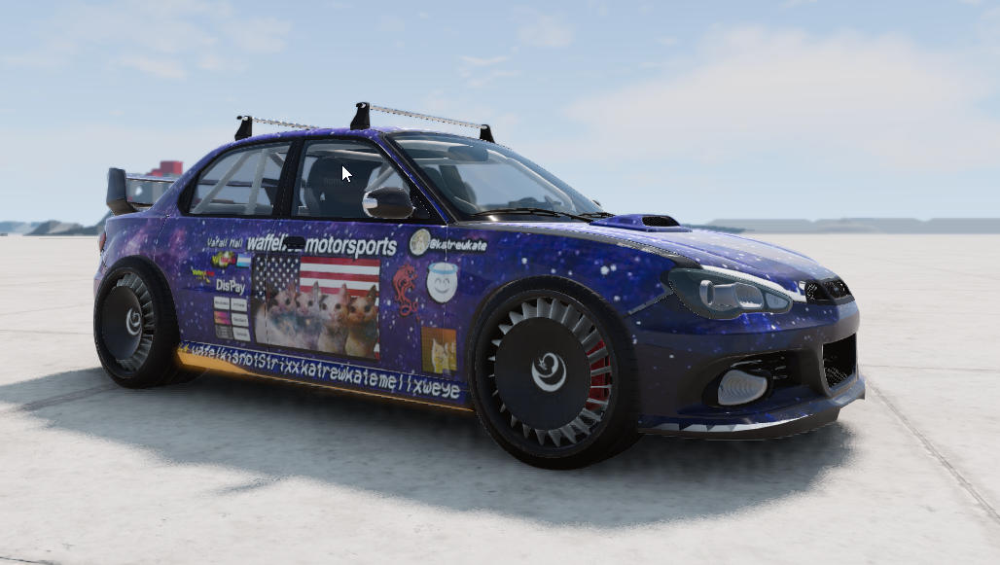
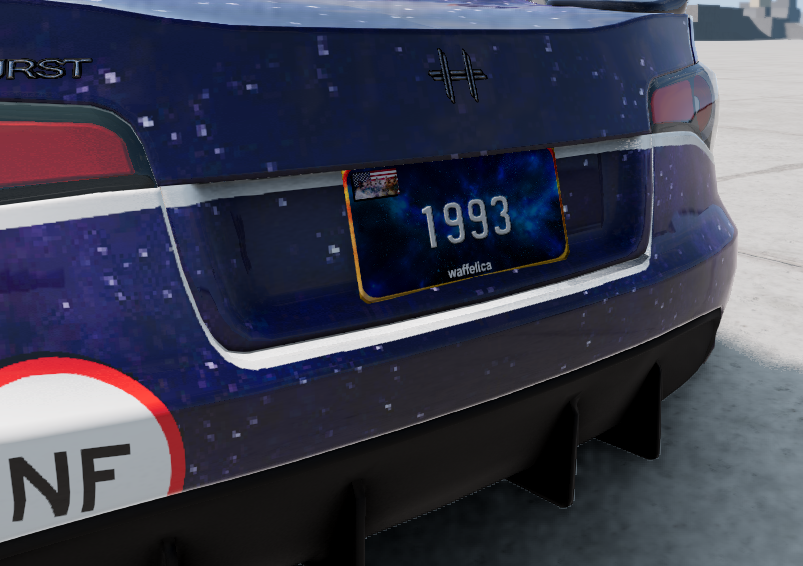

what you are visiting is an incomplete and abandoned page, you have been warned. this might be revived later, or not.
home | misc
idk, lets start there :D
also i should really take more cool pictures for this page:(
beamng car.
beamng car.

 the cake is not a lie, bro. totally.
why?
idk, i was bored :) but anyhow, id like to talk about why i like cars. answer? IDFK! i like cars for some reason, theres something about em i cant really seem to get my thumb around. it kind of all faded in my later years (16/17), but came back arnd May 2025, because i went to take a theory test for the B vehicles category, and somehow, I PASSSED??????? so i ended up lowkey falling in love w em again and i am kind of my way to getting a license :) i will probably post my car here at some point, or just road trip stuff, why not? also sad that i dont have a picture of my g29 when i first bought it, its been a fucking great piece of tech, and survived a bunch of abuse, i would recommend the g29 if you can get it on a budget and love cars [or cant drive them in real life] :)
"its only after weve lost everything, that we are free to do anything."